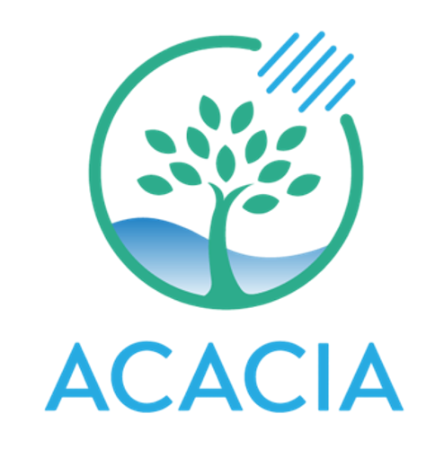

Core
Example notebooks
Other
acacia_s2s_toolkit
acacia_s2s_toolkit.bias_correction
acacia_s2s_toolkit.download_forecast
acacia_s2s_toolkit.download_hindcast
acacia_s2s_toolkit.download_S2Stc_tracks
acacia_s2s_toolkit.postprocess